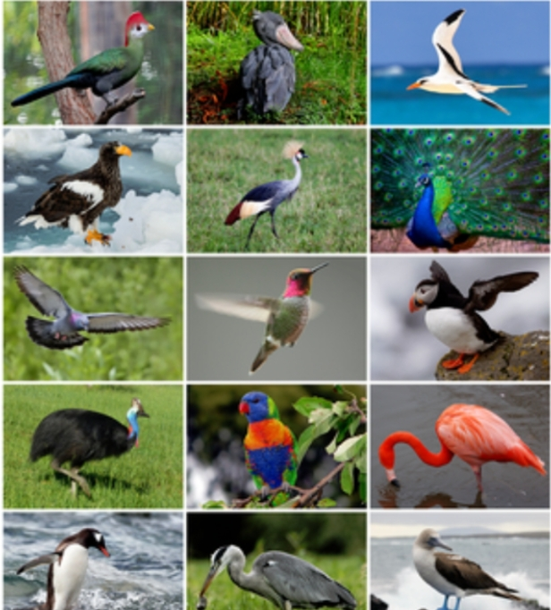

Automatic Crop Irrigation system is the artificial application of a controlled amount of water to the soil through pumps, and sprinkler [1]. Irrigation is used to assist in the growing of agricultural crops, maintenance of landscapes, re-vegetation of disturbed soils in dry areas and during periods of inadequate rainfall, suppressing weed growth. A crop is defined as any terrestrial plant grown for economic profit or personal use. Within many regions in Nigeria however, insufficient precipitation during the critical portions of the growing season (November 1 to January 31) may decrease productivity. In these areas, irrigation of agricultural crops is required to maintain high growth rates and yields Some common sources of irrigation water include groundwater, springs, wells, rivers, lakes, reservoirs, and other sources such as treated wastewater or desalinated water [2]. The old method used for irrigation was use of watering cans, water channels that have to be opened and closed manually or backpack sprinklers. In this case, a lot of water is wasted in the process. There is need for improvement on the existing or old forms of irrigation.
Irrigation may be the single most strategically important intentional environmental modification humans have learned to perform.
learn moreTesting of the hardware and software is important because it will founds issues which can be present in the hardware or in software and can damage the important components of the system.
learn moreThese are the set of sensors that are used to determine when the automatic crop irrigation system needs to be turned on/off, a variety of factors can be taken into consideration when determining that the automatic crop irrigation system needs to be switched on/off, depending on the application of the system. For water irrigation, the amount of moisture in the soil will be the primary measurement used in automatic crop irrigation system needs to be switched on/off depending on the application of the system. For protection, the temperature of the soil surface may be the criteria needed in determining when the system needs to be switched ON.
Microcontroller is used to control the whole system by monitoring the sensing arrangement. The microcontroller does the above job as it receives the signal from the sensing arrangement through the output of the comparator, and these signals operate under the control of software which is stored in ROM of the Microcontroller. The condition of the pump i.e., ON/OFF is displayed on a 16X2 LCD.
A thermocouple is a simple robust and cost-efficient temperature sensor used in a wide range of temperature measurement processes. It comprises of two divergent metal wires, joined toward one side. Thermocouples can provide measurements over a wide range of temperatures, measurements over a wide range of temperatures. Known for their adaptability as temperature sensors, as they are manufactured in a variety of styles, such as thermocouple probes with connectors etc. they are commonly used in wide range of models and technical specifications.
HUMIDITY SENSORS: Humidity sensor senses, measures and reports both moisture and air temperature. The ratio of moisture in the air to the highest amount of moisture at a particular air temperature is called relative humidity. Relative humidity becomes an important factor when looking for comfort. Humidity sensors works by detecting changes that alter electrical currents or temperature in the air. 3.6 Types of humidity sensors: Capacitive Resistive Thermal
RECOMMENDATION I recommend that for a large scale implementation a more powerful water pump can be used. Also a microcontroller should be used to accommodate more than one sensor input and also control different irrigation regimes independently. A wireless sensor and GPRS(General Packet Radio Service) based automated irrigation system can also be employed, it will help monitor the soil moisture and to control the application of water to the agricultural products thereby saving water.